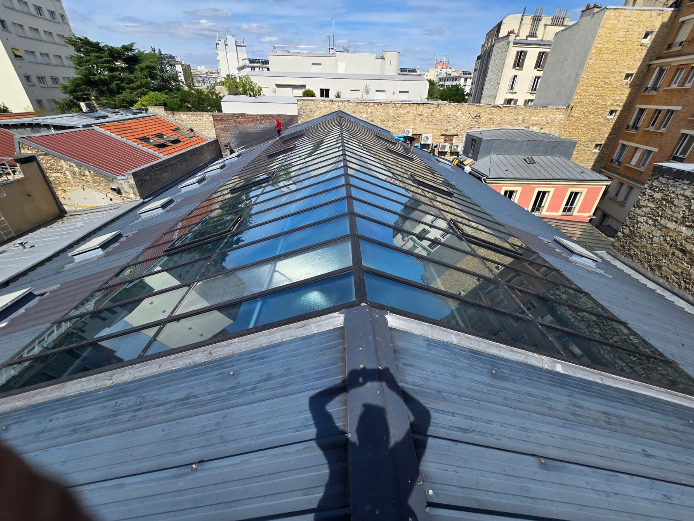
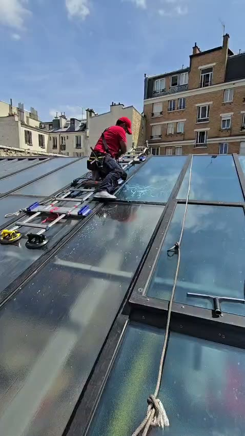

Film solaire extérieur sur une verrière de toiture à Paris 14e.
Grande verrière à deux pans, encastrée dans une toiture zinc au cœur d'un îlot du 14e arrondissement. Pose d'un film solaire transparent Spectra 333 XC en face extérieure, panneau par panneau, avec travail en hauteur sécurisé. Objectif : arrêter la chaleur avant qu'elle n'atteigne le vitrage, sans assombrir l'espace éclairé par la verrière. Chantier filmé, la vidéo est ci-dessous.

La verrière depuis le faîtage, film solaire posé — Paris 14e
Application du film sur la face extérieure du vitrageLe contexte
Au cœur d'un îlot du 14e arrondissement de Paris, ce bâtiment est coiffé d'une grande verrière à deux pans encastrée dans une toiture en zinc. Elle éclaire généreusement l'espace qu'elle surplombe, mais elle en fait aussi un piège à chaleur : exposée toute la journée, sans masque, avec une ossature métallique noire qui emmagasine le rayonnement.
La demande était claire : faire baisser la température sous la verrière sans toucher à la structure, sans stores ni gros œuvre, et surtout sans sacrifier la lumière naturelle qui fait l'intérêt du lieu.
La solution technique
Nous avons retenu le Spectra 333 XC, un film solaire transparent à technologie nano-céramique, sans métal, conçu pour une pose en face extérieure. Le choix de l'extérieur s'impose sur une verrière de toiture : le film intercepte l'énergie solaire avant qu'elle ne pénètre le verre, ce qui limite l'échauffement du vitrage lui-même et évite les contraintes thermiques sur des vitrages anciens. L'absence de métal garantit par ailleurs qu'aucun signal (Wi-Fi, téléphonie, GPS) n'est perturbé.
- Chaleur rejetée en amont du vitrage : l'effet de serre sous la verrière est fortement réduit
- Transparence conservée : le film est quasiment invisible, l'aspect de la verrière ne change pas
- Filtration des UV : protection des sols, mobiliers et matériaux exposés sous la verrière
- Formulation extérieure : conçue pour résister aux intempéries et au rayonnement direct
Selon la fiche technique du fabricant, le Spectra 333 XC rejette environ 97 % des infrarouges et 99 % des UV tout en laissant passer près de 75 % de la lumière visible.
L'intervention
La verrière n'est accessible que par la toiture : le chantier s'est donc déroulé en travail en hauteur, avec harnais et ligne de vie ancrés au faîtage, et une échelle de répartition posée sur l'ossature pour ne jamais faire porter le poids du technicien sur un vitrage. Chaque panneau a été nettoyé, décontaminé puis filmé un par un, dans le sens de la pente, la pose extérieure exigeant une préparation du verre particulièrement soignée.
Le chantier a été mené depuis la toiture elle-même, sans emprise au sol dans la cour ni gêne pour les occupants du bâtiment.
Ce que ce chantier illustre
Les verrières de toiture, ateliers, halls, cages d'escalier ou surfaces commerciales, concentrent le problème de surchauffe estivale : une surface vitrée inclinée, exposée toute la journée. Le film solaire extérieur y est souvent la réponse la plus efficace, sans démontage ni fermeture des lieux, avec un résultat immédiat dès la fin de la pose. Nous intervenons dans tout Paris et en Île-de-France, y compris sur des toitures d'accès difficile. Voir aussi notre chantier sur les verrières du Carré Sénart et notre page film solaire.
Verrière, atelier, hall vitré qui surchauffe ?
On traite vos verrières. Depuis la toiture s'il le faut.
Film solaire intérieur ou extérieur selon la configuration, travail en hauteur sécurisé, pas de fermeture des locaux. Diagnostic gratuit par téléphone, devis sous 48 h à Paris et en Île-de-France.